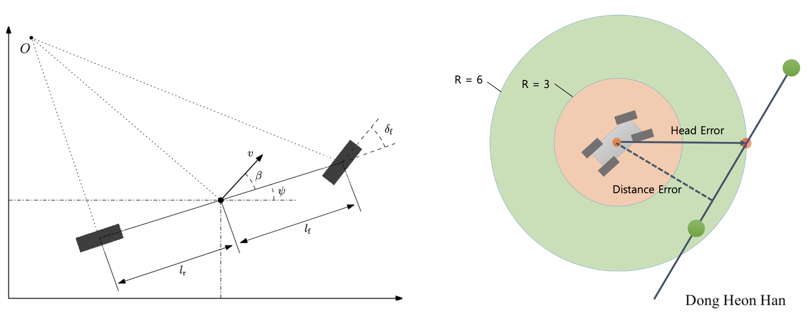
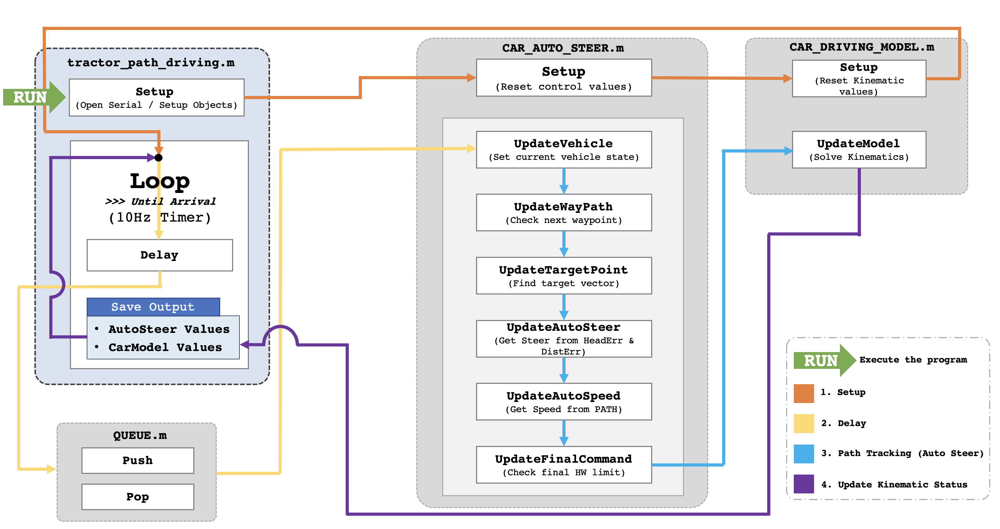
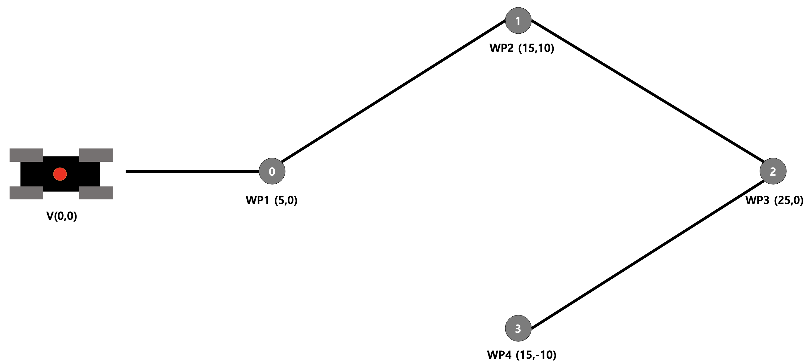

Recently, due to the development of IT convergence technology, the environmental implantation sensor technology, and the low cost of controllers, the autonomous vehicle industries are rapidly developing. This study develops a Dynamic Path Tracking Algorithm based on autonomous steering control technology, which is one of the core technologies among autonomous driving technologies.
The Pure Pursuit Algorithm arbitrarily sets the look-ahead distance, then finds an intersection point on the path and calculates the curvature to update the vehicle's location. Therefore, the reference path has to be generated before path tracking. Unlike the Pure Pursuit Algorithm, a Dynamic Path Tracking Algorithm is developed to perform path tracking without generating a reference path. The algorithm sets the target distance and creates the target vector that estimates the head and the distance errors to update the vehicle's location. Therefore, the Dynamic Path Tracking Algorithm provides a relatively simpler tracking method that is suitable for tractors than the Pure Pursuit Algorithm.
The ultimate purpose of the Dynamic Path Tracking Algorithm is to perform path tracking without creating a reference path and to have suitable accuracy for path tracking in different working situations.
In order to develop a path tracking algorithm, the kinematic state (including the position coordinates, the heading angle, and the steering angle) of the vehicle is updated using a two-dimensional bicycle model (figure 1 left), which is simplified modeling of the lateral movement of the vehicle. The desired path is created based on the waypoints, and the head angle and the distance of the tractor from the desired path are used as errors (figure 1 right).
For higher productivity and easier accessibility, Object-Oriented Programming (OOP) was used to implement a high-level control of a tractor. A tractor's path tracking algorithm consists of 4 steps (figure 2).
First, the initial position of the tractor and boundary conditions are initialized (orange line). Second, to establish a realistic steering and accelerating scenario, steering and speed delays (time delay occurs in the system due to the mechanical properties of the tractor) are applied in the algorithm (yellow line). Third, path tracking is conducted by using the head angle and the distance errors’ proportional control, and the tractor's speed and steering angle at that moment are estimated (blue line). Fourth, by using the steering angle and the speed, the vehicle's updated position and head angle are calculated. If the tractor arrives in the target range, the loop breaks, and the program would be terminated (purple line).
The Dynamic Path Tracking Algorithm has the disadvantage that it cannot perfectly reflect the actual steering and accelerating scenario. That is why the delay is included in the algorithm. In addition, it is necessary to change the size of the target vector according to the different working environments as well as the delay scenarios. The work area that requires more precise path tracking requires a small target vector size. On the other hand, the area outside the working area has to require a large target vector size. Therefore, Dynamic Target Control is required, and the size of the target is modified depending on the vehicle's position.
Dynamic Target Control is a control method developed to change the look-ahead distance according to a specific work situation. By dynamically changing the look-ahead distance according to the position and angle of the tractor, more precise path tracking can be performed. The size of the target range used for Dynamic Target Control is also set as a static variable. When the tractor moves toward the next waypoint, the size of the target range determines the sensitivity to reduce the head and the distance errors. The farther the target, and the closer the tractor's trajectory from the desired path, the smaller the sensitivity. In order to change the sensitivity according to the situation of the tractor, it is necessary to properly set the size of the radius of the target range.
To control the movement of the tractor, the head error and the distance error are used as feedback. These two errors are reduced by proportional control, and an appropriate gain value is found considering the control characteristics and circumstances. The gain value required for control is a value for the head error and the distance error, and is also a static variable. The tolerance for error is also set as a static variable. Since the tolerance determines the accuracy and sensitivity of the control, a tolerance suitable for the situation should be applied.
The algorithm has been completely implemented in both MATLAB and C++, and the Dynamic Path Tracking Algorithm is currently being tested to find the optimized target radii (figure 1 right) and optimized gains. Currently, the target radius is being optimized by using the Machine Learning method to dynamically change the target radius according to different situations.
A steering delay of 0.1 is used, and target radii of 3m and 6m are applied in the experiment. Figures 3 and 4 show the results of the Dynamic Path Tracking Algorithm experiment. Figure 3 displays the waypoints that are used in the experiment to show the newly developed algorithm's performance. The video shows an efficient path tracking of the algorithm, based on the result of the experiment. In addition, Figure 4 shows the results of R-type turning and C-type turning. As a result, using the Dynamic Path Tracking Algorithm, similar precision to the Pure Pursuit Algorithm can be implemented, and it is confirmed that driving and steering are possible without path creation.
